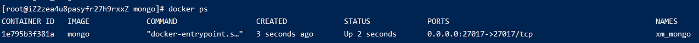
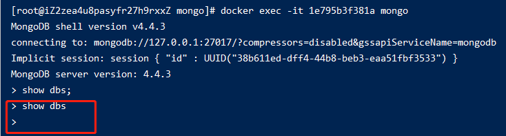
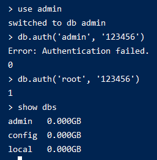

005-在docker的安装
这里是docker-compose安装的mongo服务
- 编写
docker-compse.ymlversion: "3.1" services: mongo: container_name: xm_mongo image: mongo restart: always environment: MONGO_INITDB_ROOT_USERNAME: root MONGO_INITDB_ROOT_PASSWORD: 123456 ports: - 27017:27017 volumes: - /root/svr/mongo/data:/data/db
执行下面命令启动镜像
docker up -d

- 进入容器查询数据
首先执行下面命令，进入容器镜像
# 1e795b3f381a为容器镜像 docker exec -it 1e795b3f381a mongo
需要执行下面命令登录下账号
use admin
# admin/123456 是启动容器时候设置的密码
db.auth('admin', '123456')
# 登录成功就有权限查询数据了
show dbs
